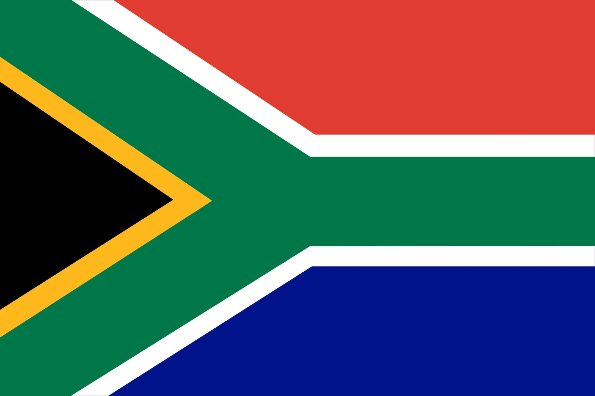
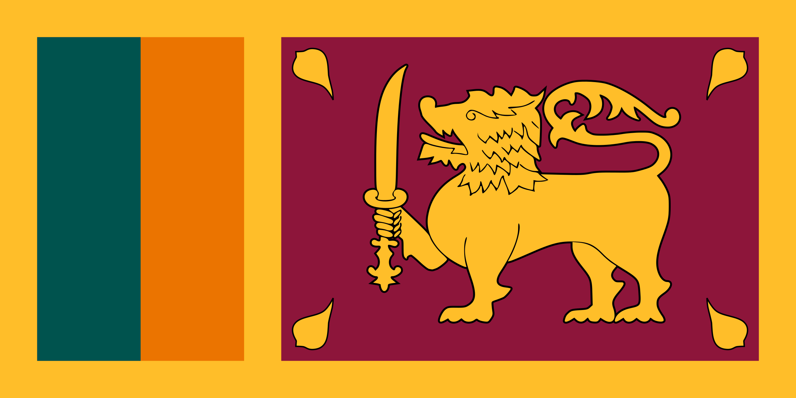

Men's Cricket Teams

India
Captain: Rohit Sharma
Coach: Rahul Dravid
ICC Rank: 1
Top Players: Virat Kohli, Jasprit Bumrah, Hardik Pandya
Home Ground: Wankhede Stadium
Read More
Australia
Captain: Pat Cummins
Coach: Andrew McDonald
ICC Rank: 2
Top Players: Steve Smith, David Warner, Mitchell Starc
Home Ground: Melbourne Cricket Ground (MCG)
Read MoreEngland
Captain: Jos Buttler
Coach: Matthew Mott
ICC Rank: 5
Top Players: Ben Stokes, Joe Root, Jofra Archer
Home Ground: Lord’s Cricket Ground, London
Read MorePakistan
Captain: Babar Azam
Coach: Gary Kirsten
ICC Rank: 4
Top Players: Shaheen Afridi, Mohammad Rizwan, Shadab Khan
Home Ground: Gaddafi Stadium, Lahore
Read More
New Zealand
Captain: Tom Latham (ODI)
Coach: Gary Stead
ICC Rank: 6
Top Players: Kane Williamson, Trent Boult, Devon Conway
Home Ground: Eden Park, Auckland
Read More

South Africa
Captain: Temba Bavuma
Coach: Rob Walter
ICC Rank: 3
Top Players: Quinton de Kock, Kagiso Rabada, Aiden Markram
Home Ground: Newlands, Cape Town
Read MoreBangladesh
Captain: Najmul Hossain Shanto
Coach: Chandika Hathurusingha
ICC Rank: 7
Top Players: Shakib Al Hasan, Mehidy Hasan, Taskin Ahmed
Home Ground: Shere Bangla Stadium, Dhaka
Read More

Sri Lanka
Captain: Kusal Mendis
Coach: Chris Silverwood
ICC Rank: 8
Top Players: Wanindu Hasaranga, Pathum Nissanka, Matheesha Pathirana
Home Ground: R. Premadasa Stadium, Colombo
Read MoreAfghanistan
Captain: Hashmatullah Shahidi
Coach: Jonathan Trott
ICC Rank: 9
Top Players: Rashid Khan, Rahmanullah Gurbaz, Mujeeb Ur Rahman
Home Ground: Kabul International Stadium
Read More
West Indies
Captain: Shai Hope
Coach: Daren Sammy
ICC Rank: 10
Top Players: Nicholas Pooran, Jason Holder, Alzarri Joseph
Home Ground: Kensington Oval, Barbados
Read More
Zimbabwe
Captain: Craig Ervine
Coach: Dave Houghton
ICC Rank: 11
Top Players: Sikandar Raza, Brendan Taylor, Sean Williams
Home Ground: Harare Sports Club
Read MoreIreland
Captain: Andrew Balbirnie
Coach: Heinrich Malan
ICC Rank: 13
Top Players: Paul Stirling, Kevin O’Brien, Mark Adair
Home Ground: Aviva Stadium, Dublin
Read MoreUSA
Captain: Monank Patel
Coach: Kumar Sangakkara
ICC Rank: 14
Top Players: Jaskaran Malhotra, Ali Khan, Saurabh Netravalkar
Home Ground: Central Broward Regional Park
Read MoreNetherlands
Captain: Scott Edwards
Coach: Ryan Cook
ICC Rank: 15
Top Players: Max O'Dowd, Bas de Leede, Logan van Beek
Home Ground: VRA Cricket Ground, Amstelveen
Read MoreNamibia
Captain: Gerhard Erasmus
Coach: Pierre de Bruyn
ICC Rank: 17
Top Players: David Wiese, JJ Smit, Ruben Trumpelmann
Home Ground: Wanderers Cricket Ground, Windhoek
Read More